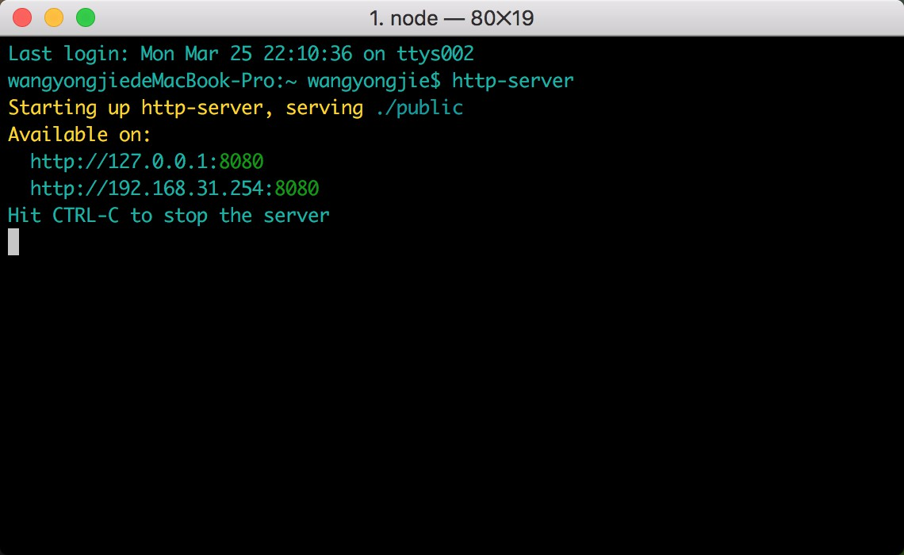

<!DOCTYPE HTML>
<html lang="zh-CN">
<head><meta name="generator" content="Hexo 3.8.0">
    <!--Setting-->
    <meta charset="UTF-8">
    <meta name="viewport" content="width=device-width, user-scalable=no, initial-scale=1.0, maximum-scale=1.0, minimum-scale=1.0">
    <meta http-equiv="X-UA-Compatible" content="IE=Edge,chrome=1">
    <meta http-equiv="Cache-Control" content="no-siteapp">
    <meta http-equiv="Cache-Control" content="no-transform">
    <meta name="renderer" content="webkit|ie-comp|ie-stand">
    <meta name="apple-mobile-web-app-capable" content="王永杰的网络日志">
    <meta name="apple-mobile-web-app-status-bar-style" content="black">
    <meta name="format-detection" content="telephone=no,email=no,adress=no">
    <meta name="browsermode" content="application">
    <meta name="screen-orientation" content="portrait">
    <!-- 自定义视频托管 -->
    <script src="https://player.polyv.net/script/polyvplayer.min.js"></script>
    <link rel="dns-prefetch" href="http://wangyongjie.top">
    <!--SEO-->

    <meta name="keywords" content="启服务">


    <meta name="description" content="
http-server是一个简单的，零配置的命令行http服务器。它对于生产使用来说足够强大，但它足够简单，可以用于测试，本地开发和学习。

http-server 是一个简单的零配置命令行H...">


<meta name="robots" content="all">
<meta name="google" content="all">
<meta name="googlebot" content="all">
<meta name="verify" content="all">

    <!--Title-->


<title>零配置命令行HTTP服务器 | 王永杰的网络日志</title>


    <link rel="alternate" href="/atom.xml" title="王永杰的网络日志" type="application/atom+xml">


    <link rel="icon" href="/favicon.ico">

    


<link rel="stylesheet" href="/css/bootstrap.min.css?rev=3.3.7">
<link rel="stylesheet" href="/css/font-awesome.min.css?rev=4.5.0">
<link rel="stylesheet" href="/css/style.css?rev=@@hash">


    


    <script>
        var _hmt = _hmt || [];
        (function() {
            var hm = document.createElement("script");
            hm.src = "https://hm.baidu.com/hm.js?f42ffe5fed856accbf91820f137dab46";
            var s = document.getElementsByTagName("script")[0];
            s.parentNode.insertBefore(hm, s);
        })();
    </script>


    

</head>

</html>
<!--[if lte IE 8]>
<style>
    html{ font-size: 1em }
</style>
<![endif]-->
<!--[if lte IE 9]>
<div style="ie">你使用的浏览器版本过低，为了你更好的阅读体验，请更新浏览器的版本或者使用其他现代浏览器，比如Chrome、Firefox、Safari等。</div>
<![endif]-->

<body>
    <header class="main-header" style="background-image:url(http://snippet.shenliyang.com/img/banner.jpg)">
    <div class="main-header-box">
        <a class="header-avatar" href="/" title="wangyongjie">
            
        </a>
        <div class="branding">
        	<!--<h2 class="text-hide">Snippet主题,从未如此简单有趣</h2>-->
            
                <h2> 我是谁 我在哪 我在做什么 </h2>
            
    	</div>
    </div>
</header>
    <nav class="main-navigation">
    <div class="container">
        <div class="row">
            <div class="col-sm-12">
                <div class="navbar-header"><span class="nav-toggle-button collapsed pull-right" data-toggle="collapse" data-target="#main-menu" id="mnav">
                    <span class="sr-only"></span>
                        <i class="fa fa-bars"></i>
                    </span>
                    <a class="navbar-brand" href="http://wangyongjie.top">王永杰的网络日志</a>
                </div>
                <div class="collapse navbar-collapse" id="main-menu">
                    <ul class="menu">
                        
                            <li role="presentation" class="text-center">
                                <a href="/"><i class="fa "></i>首页</a>
                            </li>
                        
                            <li role="presentation" class="text-center">
                                <a href="/categories/前端/"><i class="fa "></i>前端</a>
                            </li>
                        
                            <li role="presentation" class="text-center">
                                <a href="/categories/后端/"><i class="fa "></i>后端</a>
                            </li>
                        
                            <li role="presentation" class="text-center">
                                <a href="/categories/工具/"><i class="fa "></i>工具</a>
                            </li>
                        
                            <li role="presentation" class="text-center">
                                <a href="/webnav/"><i class="fa "></i>导航</a>
                            </li>
                        
                            <li role="presentation" class="text-center">
                                <a href="/archives/"><i class="fa "></i>时间轴</a>
                            </li>
                        
                            <li role="presentation" class="text-center">
                                <a href="/message/"><i class="fa "></i>留言板</a>
                            </li>
                        
                            <li role="presentation" class="text-center">
                                <a href="/categories/生活/"><i class="fa "></i>生活</a>
                            </li>
                        
                            <li role="presentation" class="text-center">
                                <a href="/about/"><i class="fa "></i>关于</a>
                            </li>
                        
                    </ul>
                </div>
            </div>
        </div>
    </div>
</nav>
    <section class="content-wrap">
        <div class="container">
            <div class="row">
                <main class="col-md-8 main-content m-post">
                    <p id="process"></p>
<article class="post">
    <div class="post-head">
        <h1 id="零配置命令行HTTP服务器">
            
	            零配置命令行HTTP服务器
            
        </h1>
        <div class="post-meta">
    
        <span class="categories-meta fa-wrap">
            <i class="fa fa-folder-open-o"></i>
            <a class="category-link" href="/categories/前端/">前端</a>
        </span>
    

    
        <span class="fa-wrap">
            <i class="fa fa-tags"></i>
            <span class="tags-meta">
                
                    <a class="tag-link" href="/tags/启服务/">启服务</a>
                
            </span>
        </span>
    

    
        
        <span class="fa-wrap">
            <i class="fa fa-clock-o"></i>
            <span class="date-meta">2018/05/14</span>
        </span>
        
    
</div>
            
            
            <p class="fa fa-exclamation-triangle warning">
                本文于<strong>415</strong>天之前发表，文中内容可能已经过时。
            </p>
        
    </div>
    
    <div class="post-body post-content">
        <blockquote>
<p>http-server是一个简单的，零配置的命令行http服务器。它对于生产使用来说足够强大，但它足够简单，可以用于测试，本地开发和学习。</p>
</blockquote>
<p>http-server 是一个简单的零配置命令行HTTP服务器, 基于 nodeJs.</p>
<p>如果你不想重复的写 nodeJs 的 web-server.js, 则可以使用这个.</p>
<h2 id="一、安装"><a href="#一、安装" class="headerlink" title="一、安装"></a>一、安装</h2><figure class="highlight js"><table><tr><td class="gutter"><pre><span class="line">1</span><br></pre></td><td class="code"><pre><span class="line">npm install http-server -g</span><br></pre></td></tr></table></figure>
<h2 id="二、用法"><a href="#二、用法" class="headerlink" title="二、用法"></a>二、用法</h2><figure class="highlight js"><table><tr><td class="gutter"><pre><span class="line">1</span><br></pre></td><td class="code"><pre><span class="line">http-server [path] [options]</span><br></pre></td></tr></table></figure>
<p>[path]默认情况下，./public如果文件夹存在，./否则。</p>
<p>现在您可以访问<code>http://localhost:8080</code>来查看您的服务器或者通过以下方式进行访问</p>
<p></p>
<h2 id="三、可用选项"><a href="#三、可用选项" class="headerlink" title="三、可用选项"></a>三、可用选项</h2><p>-p 要使用的端口（默认为8080）</p>
<p>-a 要使用的地址（默认为0.0.0.0）</p>
<p>-d 显示目录列表（默认为’True’）</p>
<p>-i 显示autoIndex（默认为’True’）</p>
<p>-g或者–gzip当启用时（默认为’False’），它将./public/some-file.js.gz代替./public/some-file.js当文件的gzip压缩版本存在且请求接受gzip编码时。</p>
<p>-e或者–ext如果没有提供默认文件扩展名（默认为’html’）</p>
<p>-s或者–silent从输出中抑制日志消息</p>
<p>–cors通过Access-Control-Allow-Origin标头启用CORS</p>
<p>-o 启动服务器后打开浏览器窗口</p>
<p>-c设置缓存控制max-age标头的缓存时间（以秒为单位），例如-c10为10秒（默认为“3600”）。要禁用缓存，请使用-c-1。</p>
<p>-U或–utc在日志消息中使用UTC时间格式。</p>
<p>-P或者将–proxy所有无法在本地解析的请求代理到给定的URL。例如：-P <a href="http://someurl.com" target="_blank" rel="noopener">http://someurl.com</a></p>
<p>-S或–ssl启用https。</p>
<p>-C或–certssl cert文件的路径（默认值：cert.pem）。</p>
<p>-K或–keyssl密钥文件的路径（默认值：key.pem）。</p>
<p>-r或–robots提供/robots.txt（其内容默认为’User-agent：* \ nDisisis：/‘）</p>
<p>-h或–help打印此列表并退出。</p>
<h2 id="参考"><a href="#参考" class="headerlink" title="参考"></a>参考</h2><ol>
<li><a href="https://www.cnblogs.com/lucker/p/4108838.html" target="_blank" rel="noopener">一个简单的零配置命令行HTTP服务器 - http-server (nodeJs)</a></li>
<li><a href="https://www.npmjs.com/package/http-server" target="_blank" rel="noopener">http-server：命令行http服务器</a></li>
</ol>
<p><br><strong>本文作者</strong>：王永杰<br><strong>本文地址</strong>： <a href="http://wangyongjie.top/blog/30954/">http://wangyongjie.top/blog/30954/</a> <br><strong>版权声明</strong>：本博客所有文章除特别声明外，均采用 <a href="http://creativecommons.org/licenses/by-nc-sa/3.0/cn/" target="_blank" rel="noopener">CC BY-NC-SA 3.0 CN</a> 许可协议。转载请注明出处！</p>

    </div>
    
        <div class="reward" ontouchstart>
    <div class="reward-wrap">赏
        <div class="reward-box">
            
                <span class="reward-type">
                    <b>支付宝打赏</b>
                </span>
            
            
                <span class="reward-type">
                    <b>微信打赏</b>
                </span>
            
        </div>
    </div>
    <p class="reward-tip">一分也是爱</p>
</div>


    
    <div class="post-footer">
        <div>
            
                转载声明：商业转载请联系作者获得授权,非商业转载请注明出处 <a href="http://wangyongjie.top" target="_blank"> http://wangyongjie.top</a>
            
        </div>
        <div>
            
        </div>
    </div>
</article>

<div class="article-nav prev-next-wrap clearfix">
    
        <a href="/blog/57596/" class="pre-post btn btn-default" title="移动端三种适配方案">
            <i class="fa fa-angle-left fa-fw"></i><span class="hidden-lg">上一篇</span>
            <span class="hidden-xs">移动端三种适配方案</span>
        </a>
    
    
        <a href="/blog/16302/" class="next-post btn btn-default" title="jQuery知识总结之DOM操作">
            <span class="hidden-lg">下一篇</span>
            <span class="hidden-xs">jQuery知识总结之DOM操作</span><i class="fa fa-angle-right fa-fw"></i>
        </a>
    
</div>


    <div id="comments">
        
	
<div id="lv-container" data-id="city" data-uid="MTAyMC8zNDc5OS8xMTMzNg==">
  <script type="text/javascript">
     (function(d, s) {
         var j, e = d.getElementsByTagName(s)[0];
         if (typeof LivereTower === 'function') { return; }
         j = d.createElement(s);
         j.src = 'https://cdn-city.livere.com/js/embed.dist.js';
         j.async = true;
         e.parentNode.insertBefore(j, e);
     })(document, 'script');
  </script>
</div>


    </div>


                </main>
                
                    <aside id="article-toc" role="navigation" class="col-md-4">
    <div class="widget">
        <h3 class="title">文章目录</h3>
        
            <ol class="toc"><li class="toc-item toc-level-2"><a class="toc-link" href="#一、安装"><span class="toc-text">一、安装</span></a></li><li class="toc-item toc-level-2"><a class="toc-link" href="#二、用法"><span class="toc-text">二、用法</span></a></li><li class="toc-item toc-level-2"><a class="toc-link" href="#三、可用选项"><span class="toc-text">三、可用选项</span></a></li><li class="toc-item toc-level-2"><a class="toc-link" href="#参考"><span class="toc-text">参考</span></a></li></ol>
        
    </div>
</aside>

                
            </div>
        </div>
    </section>
    <footer class="main-footer">
    <div class="container">
        <div class="row">
        </div>
    </div>
</footer>

<a id="back-to-top" class="icon-btn hide">
	<i class="fa fa-chevron-up"></i>
</a>


    <div class="copyright">
    <div class="container">
        <div class="row">
            <div class="col-sm-12">
                <div class="busuanzi">
    
</div>

            </div>
            <div class="col-sm-12">
                <span>Copyright &copy; 2019
                </span> |
                <span>
                    Powered by <a href="//hexo.io" class="copyright-links" target="_blank" rel="nofollow">Hexo</a>
                </span> |
                <span>
                    Theme by <a href="//github.com/shenliyang/hexo-theme-snippet.git" class="copyright-links" target="_blank" rel="nofollow">Snippet</a>
                </span>
            </div>
        </div>
    </div>
</div>


<script src="/js/app.js?rev=@@hash"></script>

</body>
</html>